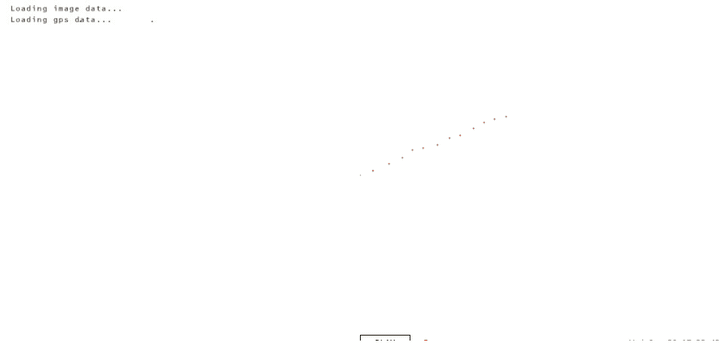
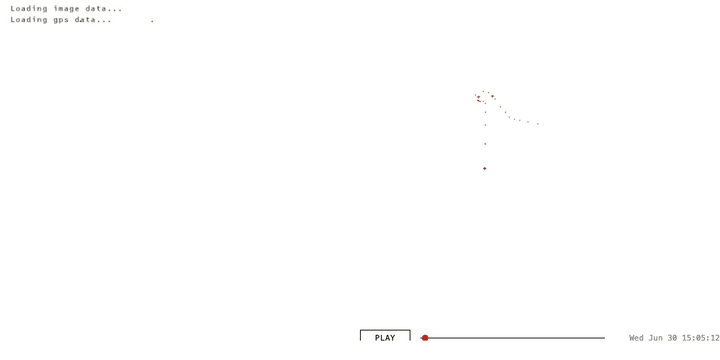
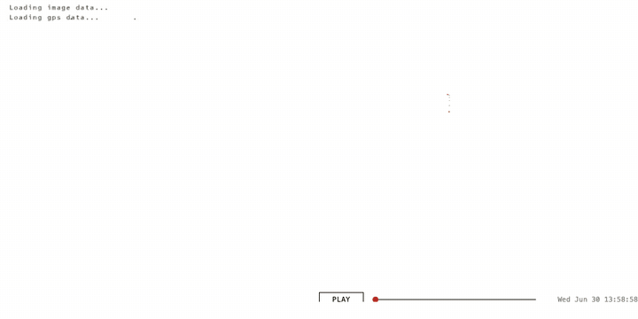

Time that land forgot, an archaeology
Time that land forgot is a piece I made in July 2004 with Even Westvang at a workshop in Höfn, Iceland called Inside and Out, run by Pallit at the Iceland Academy of the Arts. We had ten days, a Garmin eTrex, a small digital camera and a copy of Macromedia Flash MX. We came back with 241 photographs strung along a 1,500 km GPS trail, and a Flash piece that played them back: a camera riding the trail, the photographs blooming in at the spots they were taken, red ring markers accumulating as the trip unfolded.
It sat on the elasticspace blog for years, then it stopped working. Browsers dropped Flash in 2020. The piece went dark.
Last week, over the course of one long evening, I got it running again, in plain HTML in a modern browser. It is here. I want to write down what it took, because the process turned out to say something about software archaeology, and about what AI is for in this kind of work.
Four files in a folder
The folder I started from contained four kinds of file. None of them, on their own, was enough to bring the piece back. Together they were just enough.
The first was an SWF. That is the file extension for a compiled Flash movie, the thing a browser used to play. SWF stands for "Shockwave Flash", later renamed "Small Web Format". It is a binary blob, 27 kilobytes in this case, that contains the program logic, the drawn shapes, the layout, the timing. You cannot open it in a text editor and read it. You used to be able to play it with a Flash plugin in a browser. You cannot any more.
The second was an FLA. That is the source file the SWF was compiled from. It is what I had open in Flash MX in Höfn, with a timeline and layers and the actual ActionScript I was writing. The compiled SWF was a smaller, faster version of it for the web. I still have the FLA. I cannot open it. Macromedia Flash MX has not shipped since 2004. Adobe bought Macromedia, renamed Flash to Animate, and Animate cannot read MX-format files. The changelog inside the folder reads, in full:
31.07.04
- fixed string to date function in util that kept it from running on the PC. cuase: error in flash in date object, month must be set last
- saved file as MX project, instead of MX 2004.
That last line shut the door. We saved the file in the older MX format so a collaborator on a slightly older Mac could still open it. That choice locked the file away from every later version. It is now a 65-kilobyte object on disk that no software in the world can open. The Unix file command identifies it as "Composite Document File V2 Document, Cannot read section info". A solid, intact, completely useless artefact.
The third file was a QuickTime movie. time_land_forgot.mov, 84 megabytes, 192 seconds long. Even recorded it in Höfn by playing the Flash piece in a browser on his laptop and screen-grabbing the result. The original 2004 post on elasticspace describes the QuickTime in plain terms: "for those unable to run Flash at a reasonable frame rate." It was meant as a courtesy for slow laptops in 2004. Twenty-two years later it is the only continuous record of the piece actually playing. Nothing else captures the motion, the timing, the way the camera springs along behind the GPS, the way the photographs bloom large and shrink small.
The fourth was the writeup. The post I had written on elasticspace at the time, plus a small README.txt Even and I left in the folder. The post described what the piece was for. The phrase that mattered most, twenty-two years later, was this:
We chose to create a balance of representation in the interface around a set of prerogatives: first image (for expressivity), then time (for narrative), then location (for spatialising, and commenting on, image and time).
That sentence turned out to be the design contract. Image first, then time, then location. The README named the inputs the piece needed (a GPS file, an image data file, a folder of JPEGs) and pointed at GPSbabel as the tool to convert GPS data. It ended with: "Any well researched questions on why things don't work can be addressed to even@polarfront.org."
So: an unrunnable binary, an unopenable source, a screen recording, and a paragraph of prose. Together, just enough.
What it means to pull these in 2026
Pulling them means different things for each one.
The SWF can be pulled. There is a tool called swfdump that reads the bytecode and prints it out as a long text listing, 3,757 lines of low-level instructions in this case. There is a second tool, JPEXS, that goes a step further and decompiles the bytecode back into something close to the original ActionScript source. Inside that text I could find every class Even and I had written: TimeKeeper, CameraKeeper, ImageKeeper, TrackKeeper, AnimParser. Every constant: the spring stiffness of the camera (1/40), the damping coefficient (0.69), the photo bloom formula (3.5 + 9,000,000 / (time-since-photo + 1)). I could see the colour of the red minute markers (#c40000). I could see the lat/long projection (longitude × 400, latitude × −800, not a real map but two multipliers). The whole piece, faithfully preserved as it had compiled in July 2004.
The FLA cannot be pulled. It just sits there. I tried. The file is structurally sound, the bytes are not corrupted, but no software exists that can read it. This is what breaks software archaeology: the source file, the thing I would normally consider canonical, the master, is the one that is gone. The compiled output, the thing I always treated as derivative, is the one that survives.
The QuickTime can be pulled. ffmpeg reads it without fuss. I extracted it as 192 still frames at one per second, and a denser pass at two per second for closer comparison. Those frames became the visual ground truth. Without them I would have had no way to tell what the piece was supposed to look like in motion, only what it was supposed to do.
The writeup can be pulled by reading it. It is text. It explains intent. The phrase about image, time and location was a sentence I could quote back at the recreation as a check.
What AI did
I worked through this with Claude in a terminal. Claude is an AI built by Anthropic. It can read files, run shell commands, write code, and hold a conversation. I gave it the folder and asked it to find a way to bring the piece back.
The things it was good at, in this work:
Reading the bytecode. 3,757 lines of disassembly is not a thing a person reads in an evening. Claude read it, identified every class, traced every function, and ported the logic across to JavaScript. Spring constants, animation order, draw shapes, even the order in which markers and photographs were stacked on screen.
Running tests against hypotheses. When I wasn't sure whether the camera in 2004 had been set to GPS time or to some local time, Claude wrote a Python script that detected every long pause in the GPS log, then checked which photographs landed inside those pauses under each possibility. It found the Geysir pause, a 32-minute stop at coordinates 64.31 north, −20.30 west, the exact location of the original geyser. It surfaced the five photographs whose EXIF timestamps fell inside that window. They showed a warning sign in Icelandic about not throwing objects into the springs, a person crouching by a steaming pool, tourists with cameras, a steaming geothermal pool with calcified rock. The camera was on GPS time. My recollection had been right; the empirical test confirmed it.
Watching frame by frame. When the recreation didn't quite match the QuickTime, Claude could line up frames from each at the same trip-time and tell me what was different. Side-by-side composite videos, regenerated each time we changed a constant.
Speed. The whole recreation, the side-by-side comparison videos, the public deployment to GitHub Pages with the source repo, took an evening. In 2004 it took ten days to make the original. The asymmetry is not in skill, it is in what the surrounding tools have become.
The things it got wrong, often, on the way:
The first attempt was a tool. A dark map with photos as dots and a sidebar viewer. It was the kind of thing a software engineer would build in 2026 if you said "interactive GPS photo viewer". It was not what we made in 2004. We had made an experience. I had to state this before the second attempt was even tried. The aesthetic instinct of a current AI is to produce what other software in 2026 looks like; you have to push it firmly to recover what software in 2004 looked like.
It trusted the file headers. The SWF declares a frame rate of 120. Claude used that. The piece played four times too fast. The actual frame rate, which had to be measured by counting GPS points and dividing by the QuickTime duration, was 30. Many things in the bytecode are calibrated to that 30, and they only feel right at 30. The header was advertising; the QuickTime was the truth.
It misread bugs as features and features as bugs. The original code had a typo in the GPS display: it divided longitude by the latitude scale, producing a value of "10.95 W mid-Atlantic" while the actual coordinates were 21.88 W in Iceland. Claude initially hypothesised that the QuickTime had been rendered with a fuller GPS file that included the trans-Atlantic flight. It hadn't. The map shape was identical; the display formula was buggy. It took a careful look at the constant ratio between displayed and actual longitudes (exactly −0.5) to undo the wrong hypothesis.
It went around in circles on transparency. The photographs in the original have a translucent quality that lets older photographs show through behind newer ones. Claude tried seven different opacity settings, between 10% and 100%, before working out that the translucent quality was not translucency at all. It was size disparity. New photographs bloom large; old ones shrink to small frames behind. The visual impression of layering comes from many small things behind one big thing, not from any photograph being see-through.
It used hedging language. When I asked how close the recreation was to the original, Claude said things like "matches closely" and "broadly similar". I called this out. In archaeology, "closely" is doing a lot of work. Either two frames are the same or they are not.
Getting closer
Halfway through the night I stopped trying to compare the recreation to the original by eye and built a side-by-side harness. The original QuickTime on the left, the recreation playing the same trip-time on the right. Render every frame to a still image, composite the two, build a video. Look at the result. Spot what's wrong. Fix it. Render again.
It took nine iterations to get the side-by-side itself working correctly. The first version showed obviously different content (different photos in the dominant position, the camera centred elsewhere) because the seek-mapping I was using assumed evenly-spaced trackpoints, but they cluster densely during stops and sparsely during travel. Versions two through eight each fixed one bug: a wrong scale cap, a missed marker layer, a photo opacity ceiling that came from misreading a CXForm, a 9-minute drift, then a 6-hour drift, then a 7-hour drift caused by my Mac being on PDT and Python's datetime silently interpreting timestamps as Pacific. The OCR-driven sync (using tesseract to read each .mov frame's display label and rebuild the seek manifest from those literal timestamps) was version nine. Then the panels matched.


datetime library. The Mac doing the rendering was on PDT.
Building the side-by-side harness was the move I should have made on day one, before the first attempt at porting. I didn't, because reading the bytecode and reasoning symbolically felt cheaper than wiring up screenshots and OCR. Each tweak felt cheaper than the harness; the cumulative cost of guessing was much higher than just building it. I've written the lesson down for next time: when there's a high-fidelity ground-truth artefact (the .mov, in this case), build the synced comparison before the first iteration. Treat it as the test harness, not as the final polish.
What I did, that AI could not
Six things, by my count.
One. I decided what the work was. Tool or film. AI could not make this call. The first attempt was a tool. The second was a film. The difference between them was not in the data or the code; it was in what the work was for. That decision is not in the bytecode and not in the QuickTime. It is in me.
Two. I decided what counted as character, and then I decided where the line was. The longitude bug, the wrong-but-consistent timezone label, the squashed projection that is not really a map. AI's instinct was to fix all three. My first instinct was to keep all three. After living with the recreation for a few days I split the call. The squashed projection stayed: the tall, vertically-stretched Iceland is the visual identity of the piece, and removing it produces a different artefact. The other two were doing experiential damage. The clock read two hours later than the actual local time; the longitude read as a value somewhere in the middle of the Atlantic. Both are values you read off the screen to follow the trip, and both were reading wrong. So I reverted those, and the recreation now shows the correct local time and the correct longitude. The principle landed somewhere like this: keep a bug if it is charming, revert it if it gets in the way of experiencing the data the work is supposed to be a record of. Bug-fidelity is a tactic, not the goal.
Three. I recognised Geysir from the photographs. Five JPEGs of Icelandic warning signs and steaming pools, taken by me in 2004, are recognisable to me on sight as Geysir. AI can describe what is in each frame: warning sign in Icelandic, person crouching, steaming pool. It cannot say "that is Geysir" with any confidence, because it does not have the priors. The empirical test that confirmed the camera was on UTC depended on someone who had been there saying "yes, that is the place".
Four. I tie-broke on feel. "Does the spring look right?" "Does the camera fly around enough during the bus journey?" "Why does the new version feel static?" These are not questions with a numerical answer. AI can render the comparison. Only I could decide when the comparison was close enough to stop.
Five. I pushed back when AI was confident and wrong. AI is good at producing plausible explanations. It produced a few during this work that were elegant and incorrect. The way you tell the difference is by checking the explanation against something outside the AI: against the QuickTime, against memory, against a photograph. I had to keep doing this.
Six. I brought the trip with me. "We stopped at a hot spring and jumped in." "Many of these photographs were taken from a moving bus." "There was a long walk in Reykjavik." These constraints came from being there in 2004. They are not in any file. Without them, several wrong synchronisations between photo and GPS would have passed unchallenged.
What this says about software archaeology
A note before the broader claims. Software archaeology is what this felt like from the inside, and I am keeping the term, but the field this work sits inside has names and people who have been thinking about these questions for twenty years. Rhizome has been preserving net art since the late 1990s. The Variable Media Network, started by Jon Ippolito and collaborators, named the four strategies a project like this falls under: storage, emulation, migration, reinterpretation. What I did is closest to migration: rebuild the work in a new technical stack, keep the behaviour intact. Conservators who do this professionally would also describe it in terms of "significant properties" and "behaviour preservation": which property of the original is load-bearing, agreed with the artist, and which is incidental. The bug-preservation conversation in section Two above is that conversation, in different words.
I am writing this as the artist who made the original, recreating it in a weekend with an AI, not as a conservator working on someone else's archive. So the framing here is personal, not institutional. It would be wrong to write it as if the questions were new.
Four things.
One: AI makes the impossible quickly possible, but only with hands at the keyboard. A person who knows nothing about Flash, ActionScript, GPS data, EXIF parsing, QuickTime extraction, or camera spring physics can sit down with an AI and have a working recreation by the end of the night. None of this would have been possible alone, in an evening, in 2026 or in any year. But "by the end of the night" is doing work. The hands at the keyboard are still mine. The decisions are still mine. The recognitions, the corrections, the standard of "no, do it again, this is not right yet" are still mine.
Two: the survival package matters more than any one file. The SWF survived as a binary that no plugin can play. The FLA survived as an unopenable shell. The QuickTime survived as a heavy artefact made for a courtesy reason in 2004. The writeup survived because it was prose, in a database, on a server I have kept running. Together they were just enough. If any one of the four had been missing the recovery would have been much harder, and possibly impossible. Looking at the projects I am working on now, and at how I am storing them, I am asking: what is my QuickTime? What is my writeup? Will some part of this still be readable in 2046?
Three: the human role does not shrink with AI, but it changes shape. Less typing, much less lookup, almost no boilerplate. More judgment, more push-back, more recognition, more standing on what the work is and refusing the plausible-but-wrong reading. The skill of the work is becoming the skill of saying "no, that is not it" and meaning it.
Four: AI defaults to the median implementation, away from the eccentric one. In every place where the SWF had something idiosyncratic, the first pass was the textbook version. Linear time advance instead of one-trackpoint-per-frame. The header-declared 120fps instead of the empirical 30. A first-order ease on the time variable instead of a damped spring with momentum. A photo opacity cap at the literal CXForm value instead of the loadMovie semantic that overrides it. Each of those is what a competent engineer in 2026 would build if you handed them the spec. None of them is what Even built in 2004. The reason isn't only training-data dominance. It's also that the obvious choice is lower-risk: a constant of 0.69 looks like a typo to a system that rounds to clean numbers; a parser that ignores timestamps looks like a bug to a system that respects data; a 120fps header looks like the truth to a system that trusts metadata. AI risk-aversion at the small scale compounds into aesthetic cowardice at the large scale. Median is the safe play. Median is also, by definition, not interesting. The artist-coder choices are the ones that make a piece feel like itself, and they are the ones AI consistently smooths away on first pass. Recovering them takes a person in the loop with taste, who can say "no, that's not it" and name what's missing.
Postscript, 9 May 2026.
I sent this to Even at three points during the work. His reactions, in order.
When the first port of the SWF mechanics was running but before any side-by-side existed, I sent him a link to the live recreation. He replied:
Wow. That's pretty much 1:1.
Then when I sent him a still from the side-by-side comparison and admitted that the panels were actually quite different, and that I'd asked Claude to "go into your artistic mind and understand the patterns you used":
Haha. Thanks for doing the side by side. It feels like it preserves the feeling though, even if not px accurate. The above video felt like the work I remember producing even if there is slippage. This is what talking to your grandma in the box is going to be like. For all intents and purposes the same thing.
And when I sent him the writeup itself:
Aaw, nice! Yes Claude, without that it would be v boring. Interesting that Claude's first pass was just a very ordinary photo + gpx track rendering and had lots of long overnight pauses. Boring indeed.
Three things to take away from this.
The first is the distinction between preserves the feeling and pixel accurate. The whole session up to the comparison harness had been chasing pixel accuracy. The synced side-by-side proved we'd got close, but it also proved that the work was already recognisable to its maker before pixel accuracy was achieved. The thing that mattered to Even was the feeling, and the feeling was preserved by the mechanics being right (the spring constants, the bloom curve, the parser-paced playback) more than by any single pixel matching.
The second is Even's underplayed point about the boring overnight pauses. The original SWF advanced one GPS trackpoint per animation frame, so empty time (the overnight gaps when the GPS was off, the sparse stretches between samples) took zero seconds in playback. The 2004 blog post named this design choice directly: "the system smoothes tracklog time to make breaks seem more like quick transitions." The first recreation advanced time linearly across the calendar, so those same gaps became long boring stretches with the photographs sitting unchanged for tens of seconds while nothing happened. The 2004 piece avoided this for free, by walking the array rather than the clock. The fix in the recreation was to walk the array too. Stops dwell, motion races, nights vanish.
The third is "talking to your grandma in the box." Even is being playful, but he's also being precise. The recreation is not Even, and it is not the SWF either. It is an interpretation of the work, by AI plus me, twenty-two years after the fact, that is recognisable to the person who made it as the same thing. For all intents and purposes the same thing. That is a strong claim, and it is the closest thing to a passing grade that this kind of archaeology can earn.
The piece itself
It is back. It runs in any modern browser at timoarnall.github.io/timeland-2004. A camera rides along a GPS trail across Iceland in early July 2004. Photographs surface at the locations they were taken, first huge and pixelated at the moment of presence, then receding into the timeline as time moves on. Red ring markers accumulate as the trip unfolds; brown crosshairs mark the hours. Five days compressed into roughly three minutes.
The clock at the top reads the actual time the photograph was taken in Iceland. The longitude reads as the actual longitude. The first version of this restoration preserved both display bugs from the original — the clock was two hours ahead, the longitude landed in the middle of the Atlantic — on the principle that fidelity to the original meant fidelity to all of it. After watching the piece play for a few days I changed my mind. The bugs that obstructed reading the trip went; the squashed projection that gives Iceland its tall stretched look stayed. Iceland, July 2004, with the bugs that were charming kept and the bugs that got in the way removed.
The closing paragraph of the original 2004 post wished for one thing the Flash piece did not have:
Another strand of ideas we explored was using the metaphor of a 16mm Steenbeck edit deck: scrubbing 16mm film through the playhead and watching the resulting sound and image come together: we could use the scrubbing of an image timeline, to control all of the other metadata, and give real control to the user.
The 2026 recreation has a scrub bar. The wish in the closing paragraph of the 2004 post made it into the restoration, twenty-two years after it was written. Even and I are both still here. The photographs are still 320 pixels wide. The piece works.